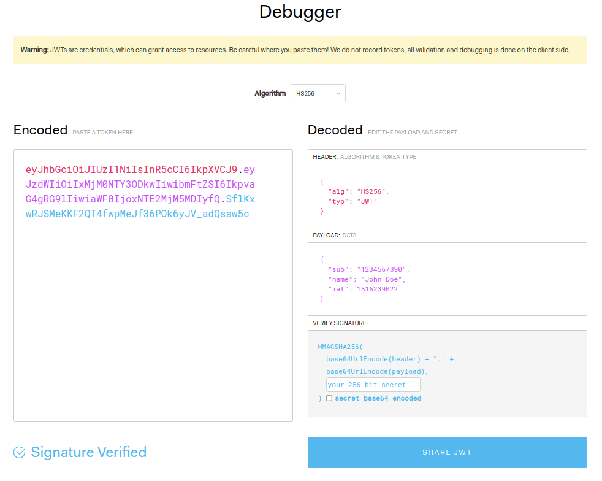
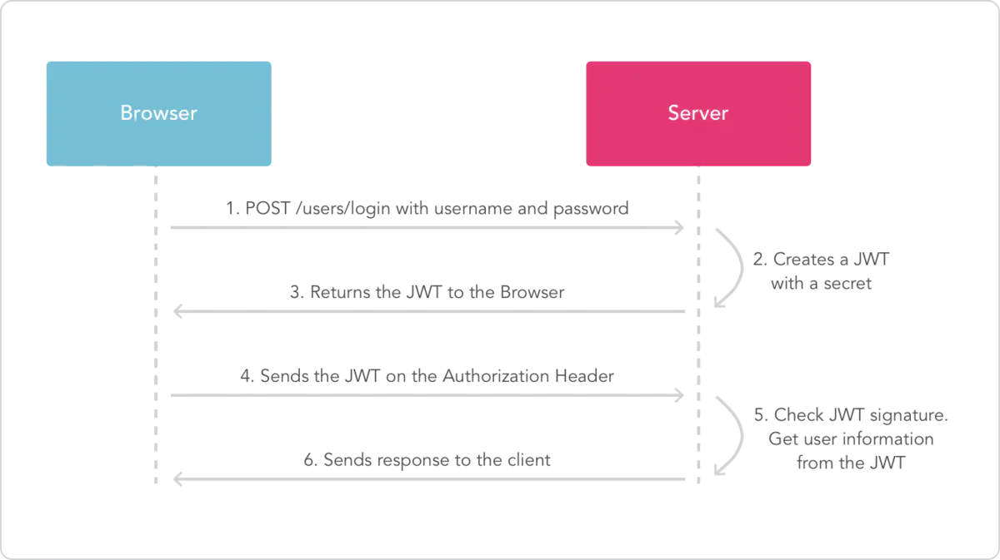

JWT

什么是JWT？
JSON Web Token (JWT)是一个开放标准(RFC 7519)，它定义了一种紧凑的、自包含的方式，用于作为JSON对象在各方之间安全地传输信息。该信息可以被验证和信任，因为它是数字签名的。
什么时候用JWT？
授权：这是使用JWT最常见的场景。用户登录后，每个后续请求都将包含JWT，允许用户访问该令牌允许的路由、服务和资源。单点登录是当今广泛使用JWT的一项功能，因为它的开销很小，并且能够轻松跨不同域使用。
信息交换：对于安全的在各方之间传输信息而言，JSON Web Tokens无疑是一种很好的方式。因为JWT可以被签名，例如，用公钥/私钥对，你可以确定发送人就是它们所说的那个人。另外，由于签名是使用头和有效负载计算的，您还可以验证内容没有被篡改。
JWT结构
JSON Web Token由三部分组成，它们之间用圆点(.)连接。这三部分分别是：
- Header
- Payload
- Signature
因此，一个典型的JWT看起来是这个样子的：xxxxx.yyyyy.zzzzz
接下来，具体看一下每个部分：
Header
Header典型的由两部分组成：token的类型（JWT）和加密算法的名称（比如：SHA256或者RSA等等）。
例如
1 | { |
然后使用Base64对这个JSON编码就得到JWT的第一部分。
Payload
Payload包含声明（要求）。声明是关于实体(通常是用户)和其他数据的声明。声明有三种类型: registered, public 和 private。
- Registered claims : 这里有一组预定义的声明，它们不是强制的，但是推荐。比如：iss (issuer), exp (expiration time), sub (subject), aud (audience)等。
- Public claims : 可以随意定义。
- Private claims : 用于在同意使用它们的各方之间共享信息，并且不是注册的或公开的声明。
下面是一个例子：
1 | { |
然后将其进行base64加密，得到Jwt的第二部分。
请注意，对于已签名的令牌，此信息虽然受到防篡改保护，但任何人都可以读取。除非加密，否则不要将机密信息放在 JWT 的负载或标头元素中。
Signature
JWT的第三部分是一个签证信息，这个签证信息由三部分组成：
- header (base64后的)
- payload (base64后的)
- secret
这个部分需要base64加密后的header和base64加密后的payload使用.连接组成的字符串，然后通过header中声明的加密方式进行加盐secret组合加密，然后就构成了jwt的第三部分。
1 | HMACSHA256(base64UrlEncode(header) + "." + base64UrlEncode(payload), secret) |
将这三部分用.连接成一个完整的字符串,构成了最终的jwt

注意：secret是保存在服务器端的，jwt的签发生成也是在服务器端的，secret就是用来进行jwt的签发和jwt的验证，所以，它就是你服务端的私钥，在任何场景都不应该流露出去。一旦客户端得知这个secret, 那就意味着客户端是可以自我签发jwt了。
基于Token的身份认证 与 基于服务器的身份认证
基于服务器的身份认证
在讨论基于Token的身份认证是如何工作的以及它的好处之前，我们先来看一下以前我们是怎么做的：
HTTP协议是无状态的，也就是说，如果我们已经认证了一个用户，那么他下一次请求的时候，服务器不知道我是谁，我们必须再次认证
传统的做法是将已经认证过的用户信息存储在服务器上，比如Session。用户下次请求的时候带着Session ID，然后服务器以此检查用户是否认证过。
这种基于服务器的身份认证方式存在一些问题：
- Sessions : 每次用户认证通过以后，服务器需要创建一条记录保存用户信息，通常是在内存中，随着认证通过的用户越来越多，服务器的在这里的开销就会越来越大。
- Scalability : 由于Session是在内存中的，这就带来一些扩展性的问题。
- CORS : 当我们想要扩展我们的应用，让我们的数据被多个移动设备使用时，我们必须考虑跨资源共享问题。当使用AJAX调用从另一个域名下获取资源时，我们可能会遇到禁止请求的问题。
- CSRF : 用户很容易受到CSRF攻击。
JWT与Session的差异
相同点是，它们都是存储用户信息；然而，Session是在服务器端的，而JWT是在客户端的。
Session方式存储用户信息的最大问题在于要占用大量服务器内存，增加服务器的开销。
而JWT方式将用户状态分散到了客户端中，可以明显减轻服务端的内存压力。
Session的状态是存储在服务器端，客户端只有session id；而Token的状态是存储在客户端。
基于Token的身份认证
基于Token的身份认证是无状态的，服务器或者Session中不会存储任何用户信息。
没有会话信息意味着应用程序可以根据需要扩展和添加更多的机器，而不必担心用户登录的位置。
虽然这一实现可能会有所不同，但其主要流程如下：
- 用户使用用户名密码来请求服务器
- 服务器进行验证用户的信息
- 服务器通过验证发送给用户一个token
- 客户端存储token，并在每次请求时附送上这个token值
- 服务端验证token值，并返回数据

注意：
- 每一次请求都需要token
- Token应该放在请求header中
- 我们还需要将服务器设置为接受来自所有域的请求，用
Access-Control-Allow-Origin: *
用Token的好处
- 无状态和可扩展性：Tokens存储在客户端。完全无状态，可扩展。我们的负载均衡器可以将用户传递到任意服务器，因为在任何地方都没有状态或会话信息。
- 安全：Token不是Cookie。（The token, not a cookie.）每次请求的时候Token都会被发送。而且，由于没有Cookie被发送，还有助于防止CSRF攻击。即使在你的实现中将token存储到客户端的Cookie中，这个Cookie也只是一种存储机制，而非身份认证机制。没有基于会话的信息可以操作，因为我们没有会话!
还有一点，token在一段时间以后会过期，这个时候用户需要重新登录。这有助于我们保持安全。还有一个概念叫token撤销，它允许我们根据相同的授权许可使特定的token甚至一组token无效。